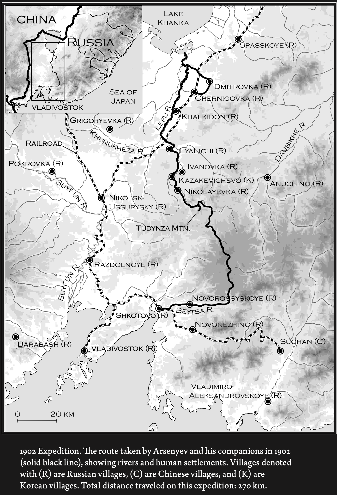
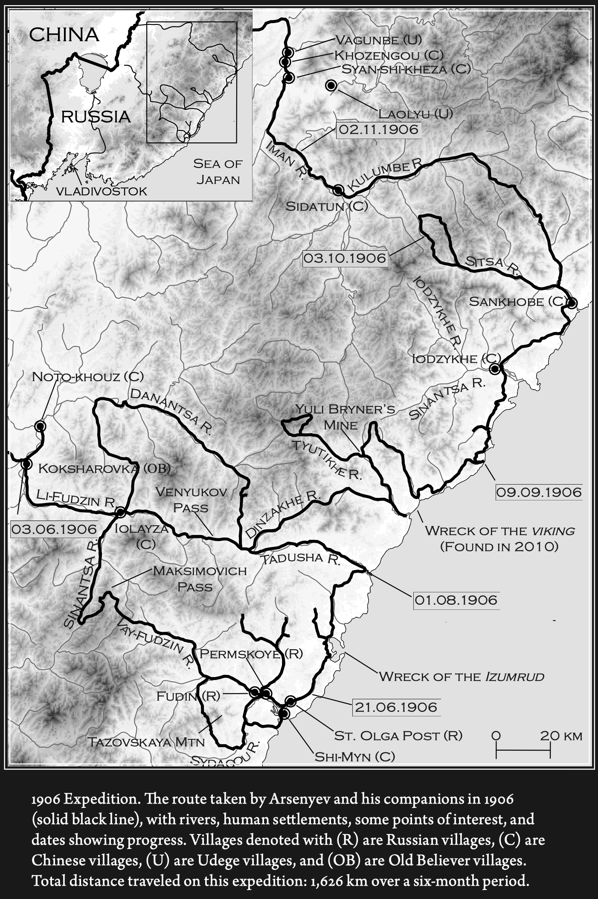

地图编辑器：
进入编辑模式
保存并导出 HTML
弗·克·阿尔谢尼耶夫远东科考互动地图
第一次科考行程 (1902年)
+ 添加新点

什科托沃 (Shkotovo)
时间：
1902年8-9月
事件：
科考起点。队伍集结，沿济木河出发。
备注：
村落建于1864年，曾被红胡子烧毁。
玻璃沟 & 大尖山
事件：
进入北岔河谷。猎手奥连季耶夫猎杀满洲豹。
地理：
穿越分水岭，勒富河源头。
土顶子山 (Tudynza)
人物：
德尔苏·乌扎拉
事件：
猎杀野猪。德尔苏展示踪迹辨识能力。
地理：
勒富河在此转向东北。
卡扎克维切沃
事件：
夜间抵达时因误会遭到朝鲜村民射击。
人文：
观察到独特的朝鲜房屋结构（地热炕）。
兴凯湖 (Lake Khanka)
时间：
1902年10月
事件：
在湖畔沼泽遭遇暴风雪。德尔苏割草搭窝棚救命。
生态：
大规模候鸟迁徙。
切尔尼戈夫卡
时间：
1902年初冬
事件：
与德尔苏在铁路边告别。考察队乘火车返回。
第二次科考行程 (1906-1907年)
+ 添加新点

什马科夫卡 - 乌拉河
时间：
1906年5月15-19日
事件：
起点。暴雨中渡过乌苏里江。
生态：
乌苏里江起点，棕黑锦蛇。
科克沙罗夫卡
时间：
6月3日
事件：
旧教徒村。向导迷路后艰难抵达。
困境：
遭遇大量蚊蚋。
奥耳加湾 (Olga Bay)
时间：
6月21日
事件：
抵达海滨休整。考察十字架山和中国集镇“石门”。
大柞树河 (Tadushu)
时间：
8月1日
事件：
在此处与德尔苏重逢。
故事：
夜间老虎跟踪，德尔苏呵斥老虎。
捷尔内伊港 (Terney)
时间：
9月9日
事件：
考察队分兵。发现“维金格号”沉船遗迹。
人物：
在此地结识中国猎人队长张保。
库松河 (Kusun)
时间：
10月3日
事件：
等待物资船。准备冬季翻山。
人文：
考察乌德海人的神树和萨满仪式。
伊曼河 - 瓦贡别
时间：
11月2日
事件：
严寒中翻越山脉返回内陆。
发现：
发现冻死的中国人尸体。
西家屯 (比金河)
时间：
12月下旬
事件：
目睹中国财东李堂奎对乌德海人的剥削。
人文：
调查比金河畔的社会结构。
编辑信息
×
地点/标题
详细字段 (标签 : 内容)
×
×
×
+ 增加一行